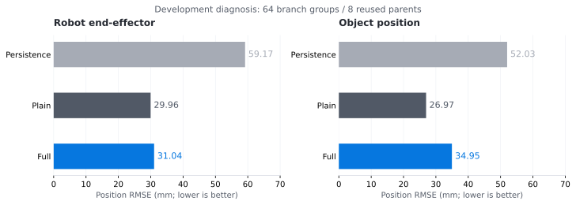

已采用的主版本
v5 · 结果冻结开发 236/240；独立原生确认 464/480。已有成果保留，后续候选不会自动替换。
RESEARCH LOG / 每一步改进，都有证据
正在读取状态…
开发 236/240；独立原生确认 464/480。已有成果保留，后续候选不会自动替换。
v6 开发仍为 236/240；v7 合用小测试 30/37，低于 v6 的 31/37，尚未采用。
核对实际碰撞几何与撤离后重规划。小测试通过才进入 240 回合开发对照。保持 400 步预算。
不同阶段分开统计；37 条件为已知诊断，不是独立确认。
| 版本 / 阶段 | 成功 / 回合 | 判断 |
|---|
最新状态加载失败，请通过项目根目录的 HTTP 服务打开，或查看下方报告。
WORLD MODEL / 世界模型驱动的延迟机器人操控
机器人发出的指令，要在 100 ms 后执行。
世界模型为四个候选预估未来，再选择下一步。
Panda · PickPlaceCan · 23维低维仿真状态
400步预算 · 3个训练种子 · 原独立确认60个起点
4 个候选 · H=8（含2步队列前缀）· 提交1个动作
机制示意，线条不代表实际预测轨迹。
Full 三种子均值
BC k=2：85%
Full 相对 BC k=2
95% 配对区间 [0.56, 10.28]
Full 相对状态保持弱基线
复用的8个开发父起点；非独立确认
01 / HOW IT WORKS
02 / SEE THE DIFFERENCE
原始 BC / Full / Plain · 演示固定 seed17 · 当前录像 10 fps · 不含后续恢复。统计汇总包含 17 / 23 / 41 三个种子。成功后停帧属于终点保持。
默认展示 Full 独胜：同一起点，Full 在133步完成，BC k=2与Plain在400步内未完成。也可切换共同成功和失败，查看适用边界。视频均未加入后续共享恢复。
视频未能加载，可使用下载链接直接打开原视频。
说明性案例：结果已知后按类别选取最小编号，世界模型固定种子17；不计入新的确认样本。
03 / WORLD-MODEL EVIDENCE
独立起点 60 个
没有共享恢复 · 840 次执行
Full − BC
95% 配对区间 [0.00, 11.67]
Full − BC
95% 配对区间 [0.00, 10.00]
原确认的两种预设条件等权汇总：Full相对BC k=2为正向收益，95%配对区间[0.56,10.28]。60个独立起点、三训练种子；并不表示每个起点都改善。
Full / Plain为三种子均值，每种子每条件60回合；BC一个固定权重。排序独立增益仍不足以确立。不得将本表与后续不同起点的恢复结果直接相减。
原始确认报告 ↗04 / PREDICTION EVIDENCE
Full 的物体位置 RMSE
相对持续性弱基线降低
52.03 mm → 34.95 mm
开发机制诊断，三种子均值

这些父起点参与过开发与检查点选择，不能证明独立泛化。Plain的这两项位置误差更低；状态误差更小，也不自动意味着任务成功率更高。
| 方法 | 末端 RMSE /mm | 物体 RMSE /mm | 归一化状态 MSE |
|---|
持续性将23维状态保持为当前观测，无动作依赖。真值短期候选排序、H=1与候选数扫描均已完成；完美的短期仿真也不能替代长期抓持和搬运。
查看补充实验与负结果 ↗05 / THESIS CONTRIBUTIONS
世界模型提供候选后果，项目把它接入有延迟的执行闭环，并通过对照定位收益和失败。以下是已有实现与证据支持的贡献范围。
把控制器、传感器与FIFO状态纳入分支恢复，修正采集不一致；模型先预测待执行命令，再比较候选。
系统实现与一致性验证结合动力学、进展与风险学习，加入候选排序和BC回退门限。三种子、Plain与真值对照检验机制；排序独立增益尚未确立。
方法设计与受控实验抓持确认、无进展检测与几何/剩余时间约束，在400步内最多恢复两次。BC和Full共享这层控制，收益单独报告。
工程扩展与边界分析06 / SHARED RECOVERY
辅助模块 · 以下收益属于共享恢复控制
v5 组合 · 八种预定执行条件的合计
相对 v4 · 95% 配对区间 [0, 4.17]
贡献了 7 次救回，未新增 v4 相对失败
另一批 60 个新原生起点，五版共 2400 次执行。BC 与 Full 共用同版恢复控制；整体成功率不能被解释为世界模型单独贡献。
| 版本 | BC 干净 /60 | BC 噪声 /60 | Full 干净 /180 | Full 噪声 /180 | 合计 /480 |
|---|
时间单项 463/480。一个新起点的六种执行在剩余预算内完成了释放；提前启动机制本身的新起点证据仍不足。
侧倒单项 458/480，只救回一次新原生执行。几何压力测试没有新增侧倒任务成功，不能宣称全面解决。
v5下，BC干净100%、噪声96.67%；Full为97.78%、94.44%。恢复收益与世界模型增益需要分别分析。
07 / RECOVERY IN DETAIL
已有 v5 日志的观测轨迹
不是新增三维机器人视频
历史 v4 / v5 恢复轨迹。原始采样 20 Hz；尚不是 v6、v7 或本轮 v8 的动画。
事后选例，包含两类救回和失抓失败。XY/高度为执行后观测，阶段为该步提交命令的阶段；2步FIFO仍生效。较早结束的轨迹保持末观测，不增加样本。
08 / RESEARCH & DELIVERY
v2/v3已经比较BC、Full与各自恢复版。共享恢复同时帮助两者；最新v5起点的关闭恢复组尚未补。
查看同起点分析 ↗公共数据与仿真、固定BC、预测模型与规则恢复分别说明。对照结果允许正面和负面结论同时存在。
查看贡献边界 ↗8篇官方文献元数据及相关方法核查，提供对照与BibTeX。文献表与提纲不是论文全文或首创证明。
查看相关工作 ↗| 条件 / 类别 | 起点 | BC k=2 | Full | Plain |
|---|